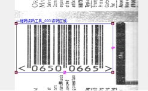
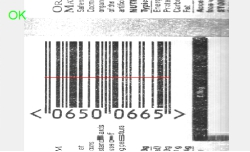

一维码读码工具用于对图像中的一维码进行识读。其实际效果如图1所示。
 
| 分类 | 参数名称 | 参数描述 |
|---|---|---|
| 属性窗口 | 是否使用ROI | ROI 为“读码区域”，可以通过修改 X、Y、W、H 值来设置，也可以在 Edit 窗口中手动拖拽来设置。不启用时，软件自动设置 ROI 区域。 |
| 读码区域 | 是否使用ROI参数选择“是”，输入读码区域的中心坐标、长度、宽度、旋转角度和切变角度。 | |
| Code128 | 是否是Code128码。 | |
| EAN_UPC | 是否是CodeEAN_UPC码。 | |
| 支持附加码 | CodeEAN_UPC码相关参数，表示是否支持附加码。 | |
| UPC-E扩展至EAN-13 | CodeEAN_UPC码相关参数，表示是否支持UPC_E扩展至EAN_13。 | |
| Code39 | 是否是Code39码 | |
| 是否开启全ASCII | Code39码相关参数，表示是否开启全ASCII | |
| Code39校验码参数 | Code39码相关参数，设置是否有校验码及是否传输 | |
| Code93 | 是否是Code93码 | |
| ITF25 | 是否是ITF25码 | |
| ITF25校验码参数 | ITF25码相关参数，设置是否有校验码及是否传输 | |
| Codabar | 是否是Codabar码 | |
| 是否开启传输起始符和终止符 | Codabar码相关参数，表示是否开启起始符和终止符 | |
| Codabar校验码参数 | Codabar 码相关参数，设置是否有校验码及是否传输 | |
| Pharmacode | 是否是Pharmacode码 | |
| 译码方向 | Pharmacode码相关参数，设置解析的方向 | |
| 条码最大个数 | 指实际读码结果中包含的条码个数。支持同时读取图像中的多个条码，可设置图像中待读取的条码个数。 | |
| 对比度类型 | 预处理的参数，包括提升信噪比、提升对比度两方面的操作。对于条码边缘模糊、对比度较差的图像，可进行提升对比度的操作，可选择的操作有对比度拉伸、直方图均衡化、二值化。 | |
| 信噪比类型 | 预处理的参数，包括提升信噪比、提升对比度两方面的操作。对于条码内部有噪声的图像，可对其进行提升信噪比的操作，可选择的操作有中值滤波、形态学开操作、形态学闭操作。 | |
| 对比度范围 | 对比度的范围为[1,255]。 | |
| 最小条码高度 | 最小条码的高度，一般读取多个或者指定的条码的时候使用。 | |
| 最大条码间距 | 最大条码的间距，一般读取多个或者指定的条码的时候使用。 | |
| 条码最小数目 | 主要针对某些特殊的条码形态进行相应的手动设置。 | |
| 图像窗口 | 输入图像 | 显示待检测的一维条形码。 |
| 读码区域 | 是否使用ROI参数选择“是”，显示读码区域，同属性窗口的读码区域参数。 | |
| 数据链 | 输入图像 | 输入图像宽度、高度、像素大小，同图像窗口的输入图像参数。 |
| 二维线性变换 | 目标相对于模板的平移、旋转、缩放变换。 | |
| 高级界面 | 无 | 无 |
| 分类 | 参数名称 | 参数描述 |
|---|---|---|
| 监视窗口 | 输入图像 | 输出图像宽度、高度、像素大小。 |
| 结果数目 | 工具实际读码数目。 | |
| 所有读码结果 | 输出读码结果，包括条码区域、条码类型、条码方向、条码等级等。 | |
| 执行结果 | 工具执行结果。 | |
| 执行时间 | 工具执行时间。 | |
| 图像窗口 | 输入图像 | 显示工具执行结果图像，同监视窗口的输出图像参数。 |
| 条码区域 | 显示条码的区域，同监视窗口所有读码结果参数中的条码区域项。 | |
| 执行结果 | 显示工具执行结果，执行成功显示“OK”，执行失败显示“NG”，同监视窗口的执行结果参数。 | |
| 数据链 | 结果数目 | 输出工具实际读码数目，供后序工具使用，通过监视窗口结果数目参数。 |
| 所有读码结果 | 输出所有读码结果，供后序工具使用，同监视窗口的所有读码结果参数。 |
| 一维码类型 | 类型 | 说明 |
|---|---|---|
| WidthModulatedCode | Code_39 | 标准39码，能够对数字、英文字母及其他字符进行编码。 |
| Code_93 | Code 93码与39码具有相同的字符集，但它的密度要比39码高。 | |
| Code_128 | 128码是一种高密度条码，CODE128 码可表示从 ASCII 0 到ASCII 127 共128个字符)，故称128码。 | |
| UPC_A/UPC_E | UPC码是美国统一代码委员会制定的一种商品用条码，主要用于美国和加拿大地区，我们在美国进口的商品上可以看到。只能表示数字，有A、B、C、D、E五个版本。 | |
| EAN_8/ENA_13 | EAN码是国际物品编码协会制定的一种商品用条码，通用于全世界。EAN码符号有标准版(EAN-13)和缩短版(EAN-8)两种。EAN-13码由13个数字组成，为EAN的标准编码型式；EAN- 8码由8个数字组成，属EAN的简易编码型式。 | |
| ITF | ITF码是一种连续型、定长、具有自校验功能，并且条、空都表示信息的双向条码)。 | |
| BC_412 | 用于晶圆标记的半导体工业。 | |
| Codabar | 库德巴码。 | |
| Pharmacode | Pharmacode 条形码携带数据，空格不携带。较高的打印容限及用多种颜色打印条形码的选项使得Pharmacode 成为一种实用格式。Pharmacode 代码必须为数字，用于制药工业。 | |
| HeightModulatedCode | Postnet/Planet | 用于美国邮政服务。 |
| OneCode | 也称为USPS 4客户条码，用于美国邮政服务信箱。 | |
| eRssCode | RssRegular/RssLimited/RssExpanded | 用于有限空间内零售产品的标记。 |
为保证识别率，1D读码工具要求成像质量最好达到以下要求：
所有条码总宽度必须大于50个像素，每个条码中的条或空的宽度不能超过10个像素。
条的宽度至少要等于大于3个像素，高约为50个像素。
空白区域必须存在。
条和空的对比度至少要差32个灰度级。
像素当量要保持在1-1.35倍之间，不能超过1.35。
参见“\Samples\读码工具.gvp”。